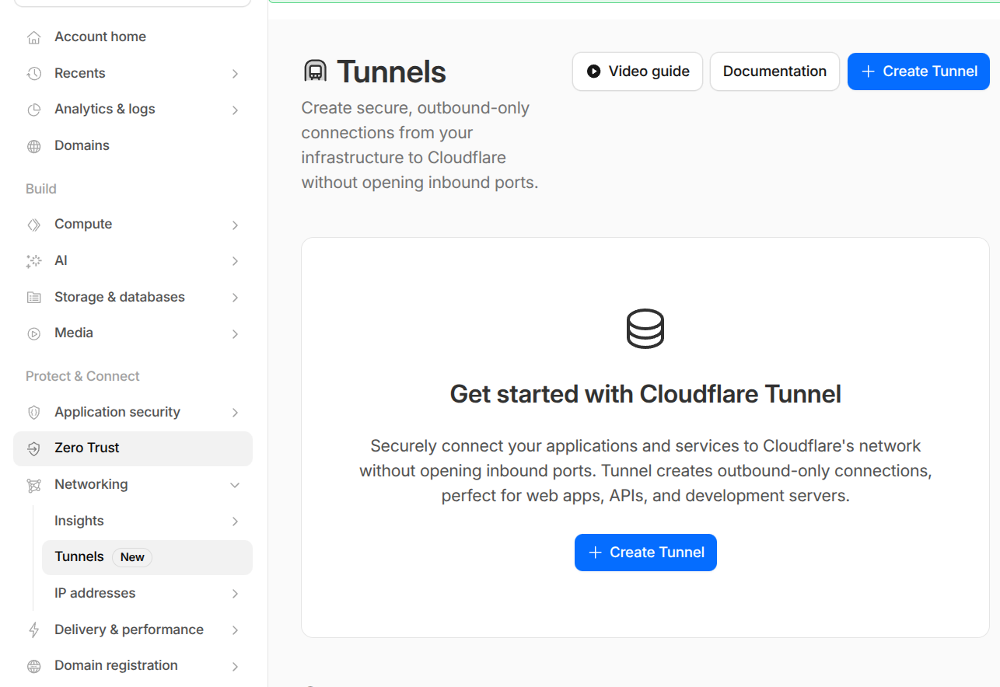
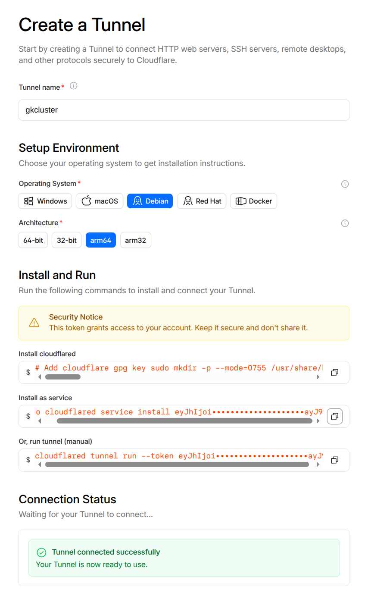

Set Up DNS, TLS & Cloudflare Tunnel#
This guide sets up three things:
A Cloudflare-managed domain — required for DNS and TLS certificates
DNS records and TLS for your cluster services (LAN-accessible via ingress)
A Cloudflare Tunnel (optional) — to expose selected services publicly
Without this guide, services are only accessible via port-forward. After
completing Parts 1–3, you get named URLs with valid HTTPS certificates
(e.g. https://grafana.example.com) on your LAN. Part 4 optionally adds
public internet access for selected services.
Architecture#
INTERNET (optional, via tunnel)
│
▼
Cloudflare Edge (WAF, DDoS protection, CDN)
│ DNS: echo.<domain> → <tunnel>.cfargotunnel.com (Proxied)
│ HTTPS (Cloudflare manages external TLS)
▼
cloudflared pod (in cluster, outbound connection only — no inbound firewall ports)
│ HTTP to ingress-nginx
▼
ingress-nginx → service
LAN ACCESS (all services)
DNS: grafana/argocd/headlamp/longhorn/rkllama.<domain> → worker IP (DNS-only A records)
Clients resolve directly to ingress-nginx without going via Cloudflare
Key design decisions:
Only explicitly configured services are publicly accessible through the tunnel. All other services use grey-cloud (DNS-only) A records — accessible from LAN only.
No wildcard CNAME in Cloudflare DNS to avoid ECH (Encrypted Client Hello) issues in Chrome (
ERR_ECH_FALLBACK_CERTIFICATE_INVALID).DNS-01 challenge for TLS certificates — works for all hostnames including LAN-only services that have no public HTTP route.
cloudflareduses an outbound-only connection — no inbound firewall ports needed.
Part 1: Cloudflare domain and API token#
1.1 Add your domain#
You need a domain managed by Cloudflare. Either:
Buy a domain directly from Cloudflare (simplest — DNS is configured automatically), or
Bring an existing domain from another registrar and delegate DNS to Cloudflare by updating the nameservers at your registrar.
Steps:
Log in to the Cloudflare dashboard.
Click Add a domain — choose to register a new one or onboard an existing one.
If onboarding, update your registrar’s nameservers to the ones Cloudflare provides.
Wait for DNS propagation (usually minutes to an hour).
1.2 Create an API token for DNS-01#
cert-manager needs a Cloudflare API token to manage _acme-challenge TXT records
for Let’s Encrypt certificate issuance.
Go to Manage Account → Account API Tokens → Create Token.
Use the Edit zone DNS template.
Configure:
Setting |
Value |
|---|---|
Permissions |
Zone → DNS → Edit |
Zone Resources |
Include → Specific zone → your domain |
Create the token and copy it immediately (shown only once).
1.3 Store the API token as a SealedSecret#
This project uses Sealed Secrets to store encrypted secrets safely in Git. The commands below create a SealedSecret that only your cluster can decrypt. For more detail on how this works, see Manage Sealed Secrets.
printf 'Cloudflare API token: ' && read -rs TOKEN && echo
printf '%s' "$TOKEN" | \
kubectl create secret generic cloudflare-api-token \
--namespace cert-manager \
--from-file=api-token=/dev/stdin \
--dry-run=client -o yaml | \
kubeseal --controller-name sealed-secrets --controller-namespace kube-system -o yaml > \
kubernetes-services/additions/cert-manager/templates/cloudflare-api-token-secret.yaml
unset TOKEN
Commit and push:
git add kubernetes-services/additions/cert-manager/templates/cloudflare-api-token-secret.yaml
git commit -m "Add cert-manager Cloudflare DNS-01 API token SealedSecret"
git push
The ClusterIssuer at kubernetes-services/additions/cert-manager/templates/issuer-letsencrypt-prod.yaml
is already configured to use DNS-01 with this token. cert-manager will now be able
to issue Let’s Encrypt certificates for all your ingress hostnames.
Part 2: DNS records for LAN services#
Add grey-cloud (DNS-only) A records in Cloudflare for each service. For high availability, create one A record per worker node for each hostname — Cloudflare will round-robin across them:
Type |
Name |
Content |
Proxy status |
|---|---|---|---|
A |
|
|
DNS only |
A |
|
|
DNS only |
A |
|
|
DNS only |
A |
|
|
DNS only |
A |
|
|
DNS only |
A |
|
|
DNS only |
… |
(repeat for each service) |
Replace the IPs with the LAN addresses of your worker nodes (e.g.
192.168.1.82, .83, .84). Services to add: argocd, grafana,
headlamp, longhorn, oauth2, open-webui, rkllama.
These resolve to private RFC-1918 addresses — only reachable from your LAN. For a single-node cluster, one A record per service is sufficient.
Warning
DNS rebinding protection — many routers and DNS resolvers silently drop DNS
responses that contain private IPs. If nslookup grafana.example.com returns
NXDOMAIN but nslookup grafana.example.com 1.1.1.1 works, your local
resolver is filtering the response. Fixes (pick one):
Router domain whitelist (recommended) — on OpenWrt, add your domain to the dnsmasq rebind domain whitelist in Network → DHCP and DNS, or add
list rebind_domain 'example.com'to/etc/config/dhcp. Other routers may have a similar setting.Use a public DNS resolver — set your router’s DHCP-advertised DNS to
1.1.1.1/1.0.0.1(Cloudflare) or8.8.8.8/8.8.4.4(Google), which do not filter private IPs.Use local router DNS instead — skip the Cloudflare A records above and create the DNS entries directly in your router’s DNS/hosts configuration. This avoids rebinding issues entirely but means DNS is split across two places.
Warning
Do not add a wildcard * CNAME record. A proxied wildcard causes Cloudflare to
publish HTTPS DNS records advertising ECH for every subdomain. Chrome will attempt ECH
for subdomains like grafana.example.com via Cloudflare’s edge, but Cloudflare has no
cert for it — resulting in ERR_ECH_FALLBACK_CERTIFICATE_INVALID.
Instead, add explicit grey-cloud A records for each service as shown above.
Part 3: Verify DNS and TLS#
Check certificates#
kubectl get certificate -A
All certificates should show READY: True. It may take a few minutes for
cert-manager to issue them after the API token is deployed.
Test LAN access#
From your LAN:
curl -I https://argocd.example.com
# Expected: 200/302 ArgoCD login page
At this point all services are accessible via https://<service>.<domain>
on your LAN. If you don’t need public internet access, you can stop here.
Part 4: Cloudflare Tunnel (optional)#
Follow this section only if you want to expose selected services to the internet. If LAN-only access is sufficient, skip to Set Up OAuth Authentication or the other guides listed in Bootstrap the Cluster.
4.1 Create a tunnel#
Navigate to Networking → Tunnels in the Cloudflare dashboard.
Click Create a tunnel.
Select Cloudflared as the connector type.
Name the tunnel (e.g.
k3s-cluster).After creation, Cloudflare shows setup instructions. Copy the tunnel token from the “Install as service” box.

The Cloudflare Tunnels dashboard after creating a tunnel.#
Extract just the token value (the long base64 string after --token).
4.2 Deploy cloudflared#
Cloudflare’s UI will not let you continue until it detects a live tunnel connection. You must deploy the cloudflared pod now.
Create a SealedSecret from the token:
printf 'Tunnel token: ' && read -rs TOKEN && echo
printf '%s' "$TOKEN" | \
kubectl create secret generic cloudflared-credentials \
--namespace cloudflared \
--from-file=TUNNEL_TOKEN=/dev/stdin \
--dry-run=client -o yaml | \
kubeseal --controller-name sealed-secrets --controller-namespace kube-system -o yaml > \
kubernetes-services/additions/cloudflared/tunnel-secret.yaml
unset TOKEN
Commit and push:
git add kubernetes-services/additions/cloudflared/tunnel-secret.yaml
git commit -m "Add cloudflared tunnel token SealedSecret"
git push
ArgoCD syncs the cloudflared Application. Watch the pod start:
kubectl rollout status deployment/cloudflared -n cloudflared
kubectl logs -n cloudflared deployment/cloudflared | tail -20
Once connected, the Cloudflare UI shows “Tunnel connected successfully”.

Cloudflare confirming the tunnel connection is established.#
4.3 Configure a public hostname#
In the tunnel details, click Routes → Add a route → Published Application.
For the echo test service:
Field |
Value |
|---|---|
Subdomain |
|
Domain |
|
Service URL |
|
Important
Use HTTP (not HTTPS) for the service URL. Cloudflare terminates external TLS at its
edge. If the tunnel also used HTTPS and ingress-nginx forced a redirect, it would cause
a redirect loop. The echo ingress has ssl-redirect: false to match.
Cloudflare creates a proxied CNAME automatically:
echo.example.com → <tunnel-id>.cfargotunnel.com (Proxied ☁)
4.4 Verify the tunnel#
# Check cloudflared connectivity
kubectl logs -n cloudflared deployment/cloudflared | tail -30
# Look for "Connection registered" and "Registered tunnel connection"
# Test public access
curl https://echo.example.com
# Expected: JSON response from the echo server
# Confirm LAN-only isolation (from outside your LAN, e.g. mobile hotspot)
curl -I https://argocd.example.com
# Expected: connection refused or timeout (private IP not reachable)
4.5 WAF (Web Application Firewall)#
Cloudflare’s built-in protections (DDoS mitigation, bot management, managed rulesets) apply automatically to all proxied traffic. No custom rules are needed for this setup — only explicitly tunnelled hostnames receive traffic from the internet.
Optionally add a rate-limiting rule in Security → WAF → Rate Limiting Rules:
Field |
Value |
|---|---|
Rule name |
|
Match |
Hostname equals |
Rate |
30 requests per 1 minute |
Action |
Block |
Making a LAN-only service externally accessible#
Tip
To expose all OAuth-protected web services at once with a single toggle, see Expose Web Services via Cloudflare Tunnel instead of the per-service steps below.
To move a service from LAN-only to publicly accessible through the tunnel:
Add a route in the tunnel. In the Cloudflare dashboard, go to Networking → Tunnels → your tunnel → Routes → Add route.
Field
Value
Subdomain
e.g.
grafanaDomain
example.comService URL
http://ingress-ingress-nginx-controller.ingress-nginx.svc.cluster.local:80Use HTTP, not HTTPS — Cloudflare terminates TLS at its edge.
Delete the grey-cloud A record for that subdomain in DNS → Records. Cloudflare creates a proxied CNAME automatically when you add the tunnel hostname. If you leave the A record in place it takes precedence over the tunnel CNAME, and external clients get the unreachable private IP.
Disable ssl-redirect on the Ingress. Traffic arriving through the tunnel is already HTTP (Cloudflare handles external TLS). If ingress-nginx forces an HTTPS redirect, it causes a redirect loop. Add the annotation:
nginx.ingress.kubernetes.io/ssl-redirect: "false"
Consider authentication. A service on the LAN may not have required auth. Once it is public, protect it with one of:
Cloudflare Access (Zero Trust) — authentication at the Cloudflare edge, zero cluster overhead. See Set Up a Cloudflare SSH Tunnel for Remote Cluster Access for an example.
oauth2-proxy — in-cluster OAuth. See Set Up OAuth Authentication.
Optionally add a rate-limiting rule in Security → WAF → Rate Limiting Rules for the newly public hostname.
Reverting to LAN-only#
To take a service back off the internet:
Delete the public hostname from the tunnel configuration.
Delete the proxied CNAME that Cloudflare created.
Re-add the grey-cloud A record pointing to your worker IP.
Remove the
ssl-redirect: "false"annotation if it was only added for the tunnel.
Cloudflare Access integration#
For services that need authentication before reaching the cluster, use Cloudflare Access (part of Zero Trust). This adds identity verification at the Cloudflare edge with zero cluster overhead.
See Set Up a Cloudflare SSH Tunnel for Remote Cluster Access for a working example with SSH, Expose Web Services via Cloudflare Tunnel for exposing web services through the tunnel, and Set Up OAuth Authentication for in-cluster OAuth as an alternative or complement.
Troubleshooting#
See the Cloudflare Tunnel section in the Troubleshooting guide for common issues and solutions.